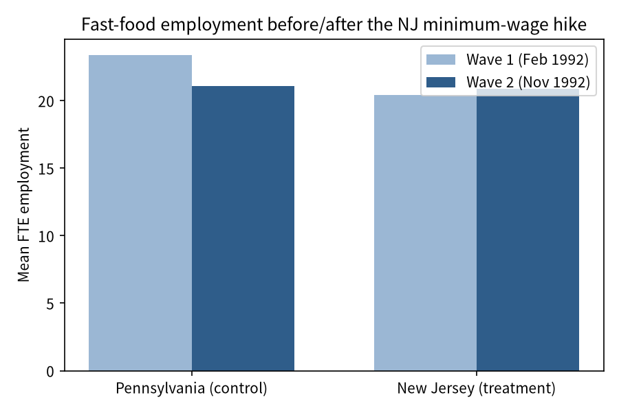
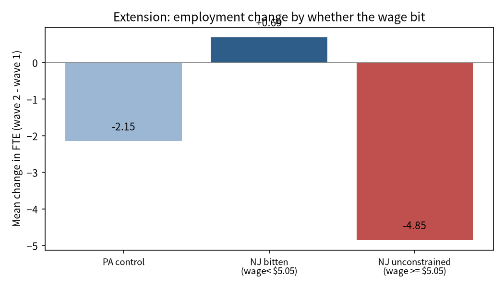

Does raising the minimum wage reduce employment? Competitive labor-market theory predicts that a binding wage floor reduces labor demand; monopsony and efficiency-wage accounts predict it need not. Card and Krueger (1994) exploit a natural experiment: on 1 April 1992 New Jersey (NJ) raised its minimum wage from $4.25 to $5.05, while neighboring eastern Pennsylvania (PA) kept $4.25. We compare fast-food restaurant employment before (Feb–Mar 1992) and after (Nov–Dec 1992) the hike using a difference-in-differences (DID) design.
Data. Store-level survey of 410 Burger King, KFC, Roy Rogers, and Wendy's
restaurants in NJ and eastern PA (data/raw/public.csv). Two waves;
suffix 2 denotes the post-hike survey.
Outcome. Full-time-equivalent employment,
FTE = EMPFT + 0.5·EMPPT + NMGRS. Treatment. STATE=1
(NJ); control = PA.
Sample. Raw 410 stores. We drop stores missing wave-1 or wave-2 FTE, and
keep a balanced panel of stores observed in both waves: 384 stores (309 NJ,
75 PA). Ten stores closed or refused in wave 2; a robustness check re-includes
permanent closures as zero FTE. Dropped counts are logged in
code/01_make_dataset.py.
First stage. Mean starting wage was ~$4.61 in both states in wave 1; by wave 2 it rose to $5.08 in NJ (at the new $5.05 floor) but stayed ~$4.62 in PA. The hike bit in NJ and not in PA.
Two-period DID on the balanced panel:
ΔFTEi = α + β·NJi + εi
where ΔFTE = FTE(wave 2) − FTE(wave 1). β = (NJ mean ΔFTE) − (PA mean ΔFTE). We add chain fixed effects and, in a third specification, region and company-ownership controls. The key identifying assumption is parallel employment trends across the border absent the hike.
| Group | Wave 1 | Wave 2 | Change | n |
|---|---|---|---|---|
| Pennsylvania (control) | 23.38 | 21.10 | −2.28 | 75 |
| New Jersey (treatment) | 20.43 | 20.90 | +0.47 | 309 |
| DID (NJ change − PA change) | +2.75 FTE | |||
The paper reports a DID of +2.76 FTE. Our replication matches to within 0.01. The sign is the opposite of the competitive prediction: NJ employment rose relative to PA after the wage hike.
| Specification | DID coef (NJ) | Std. Error | t | n | R² |
|---|---|---|---|---|---|
| (1) No controls | 2.75 | 1.15 | 2.38 | 384 | 0.015 |
| (2) Chain fixed effects | 2.78 | 1.15 | 2.41 | 384 | 0.029 |
| (3) Chain + region + co-owned | 1.29 | 1.57 | 0.82 | 384 | 0.040 |
The estimate is stable (~2.8, significant at 5%) once chain composition is controlled. It shrinks and loses significance when fine region dummies are added, because the PA control group has only 75 stores split into two regions, leaving little within-region identifying variation. Robustness: counting permanently closed stores as zero wave-2 FTE leaves the DID at +2.65.

Question. The competitive model predicts the effect should be strongest where the new floor actually raised wages. We split NJ stores by wave-1 starting wage: bitten stores (wage < $5.05, forced to raise pay) vs. unconstrained stores (wage ≥ $5.05, already above the floor), and compare each to the PA control.
| Group | n | Mean ΔFTE | DID vs. PA |
|---|---|---|---|
| PA control | 72 | −2.15 | — |
| NJ bitten (wage < $5.05) | 268 | +0.69 | +2.83 (t=2.48) |
| NJ unconstrained (≥ $5.05) | 25 | −4.85 | −2.70 (n.s.) |
The positive NJ-vs-PA result is driven precisely by the stores whose wages had to rise: bitten stores gained a significant 2.83 FTE relative to PA. Unconstrained stores are too few (n=25) to read strongly. This reinforces the paper's conclusion: even where the minimum wage bit, employment did not fall.

Validation. We independently recomputed group means and the DID by hand; the wave-1/wave-2 means and the DID match the paper to ~0.01 FTE. The first-stage wage jump, balanced-panel count (384), and stability across chain controls were all checked. The region-control sensitivity and a collinearity issue (all PA stores fall in PA1/PA2, which is perfectly collinear with STATE) were diagnosed and documented.
Limitations. This is a border DID, not a fully identified causal effect: PA has only 75 stores; parallel-trends cannot be tested with two waves; adding fine region controls weakens the estimate; the unconstrained-NJ subsample is small.
Conclusion. We replicate Card & Krueger's headline finding: a minimum-wage increase was not associated with lower fast-food employment in NJ relative to PA (DID ≈ +2.75 FTE), and the effect is concentrated among the stores whose wages actually had to rise.
AI-use disclosure: see AI_USE_DISCLOSURE.md. AI
drafted the cleaning/regression code; every number was recomputed by hand and checked
against the paper. Two AI errors were corrected: an FTE definition that omitted
managers (changed to match the paper), and a rank-deficient region regression
(fixed by dropping PA2).